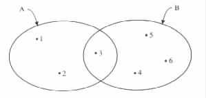

Sets
Set Operations
Relations
Functions
Countability
A set is a collection of elements. The order or repetition of the elements are immaterial. Notation of the form { x | x satisfies the property Q } is used for specifying the set of all elements x that satisfy property Q. Finite sets are also specified by explicitly listing their members between braces.
The number of elements in a set A, denoted |A|, is called the cardinality of the set. A set with no elements (i.e., cardinality equals 0) is called the empty set and is denoted by Ø.
Two sets A and B are said to be equal, denoted A = B, if they have precisely the same members. A is said to be a subset of B, denoted A Í B, if every element of A is also an element of B. A is said to be a proper subset of B, denoted A É B, if A is a subset of B and A is not equal to B.
The relationship between sets is sometimes illustrated by Venn diagrams. In a Venn diagram each of the elements of the given sets is represented by a point in the plan, and each set is represented by a geometrical shape enclosing only those points that represent the elements of the set (see Figure A.1.1).
|

|
The power set of a set A, denoted 2A, is the set of all subsets of A, that is, the set { S | S is a subset of A }.
A multiset is a collection of elements in which repetition of elements is counted. The set of natural numbers is the set of all the nonnegative integers.
The union of A and B, denoted A È B, is the set { x | x is either in A or in B }. The intersection of A and B, denoted A Ç B, is the set { x | x is both in A and in B }. A and B are said to be disjoint if they have no element in common, that is, if A Ç B = Ø.
The difference between A and B, denoted A - B, is the set { x | x is in A but not in B }. If B is a subset of A, then A - B is said to be the complementation of B with respect to A. When A is understood, A - B is simply said to be the complementation of B, denoted . In such a case A is called the universe.
The Cartesian product of two sets A1 and A2, denoted A1 × A2, is the set { (a1, a2) | a1 is in A1, and a2 is in A2 }. A Cartesian product of the form ((· · · ((A1 × A2) × A3) · · ·) × Ak) is also denoted A1 × A2 × · · · × Ak. Similarly, a ((· · · ((a1, a2), a3) · · ·), ak) in A1 × A2 × · · · × Ak is also denoted (a1, ¼, ak).
A relation R from A to B is a subset of the cartesian product A × B. If A = B, then R is said to be a relation on A.
The domain of R is the set { x | (x, y) is in R for some y in B }. If the domain of R is the set A, then R is said to be total. Otherwise, R is said to be partial.
The range of R is the set { y | (x, y) is in R for some x in A }. The range of R at x, denoted R(x), is the set { y | (x, y) is in R }.
A function f from A to B, denoted f: A ® B, is a relation from A to B, whose range f(x) at each x in A has cardinality 0 or 1. f(x) is said to be defined if it has cardinality 1, that is, if f(x) = {y} for some y. In such a case, f(x) is said to have the value of y, written f(x) = y. Otherwise, f(x) is said to be undefined.
f is said to be one-to-one if f(x) = f(y) implies x = y for all x and y in A. f is said to be onto if B is the range of f. f is said to be a predicate , or an assertion, if B = {false, true}.
éxù denotes the smallest integer that is not smaller than x. mod (x, y) denotes the remainder of an integer division of x by y. min(S) denotes the smallest value in S. max(S) denotes the biggest value in S. gcd (x, y) denotes the greatest common divisor of x and y.
A set A is said to be countable if there exists an onto function f from the set of natural numbers to A. The set is said to be countably infinite if there exists a one-to-one onto function f from the set of natural numbers to A. A set that is not countable is said to be uncountable.